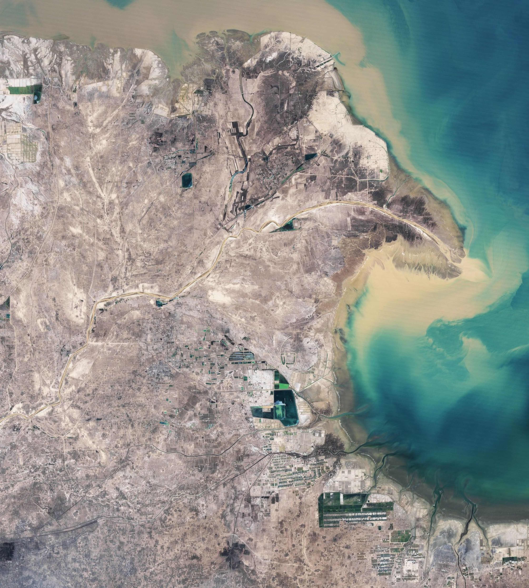

我们生活在
比自己古老的世界里。
人的身体与需要，来自漫长的生命演化。空气、水、土壤和其他生命，构成人类活动的宏观基底。

LIFE, AT THE CENTRE OF HISTORY
以生命为中心，重新看见历史。
而我们创造的世界，
正在改变这些条件。
吃、喝、劳动、照料、感受。人的生命，一直在历史之中。
王利华把“生命”带到历史思考的中心：怎样维持生活，怎样组织共同的世界，怎样让一个人的身体、经历与意义追求，一起进入我们的解释。
 Lewis Hine · 1920 · NARA
Lewis Hine · 1920 · NARA一只手。一个工具。
一种生活的组织。
人的行动有身体的条件：需要食物、休息，也有耐受的范围。沿着劳动中的身体追问，历史会走向它依赖的自然条件。
人的身体与需要，来自漫长的生命演化。空气、水、土壤和其他生命，构成人类活动的宏观基底。
黄河三角洲，同一个区域的两个时刻。

改变一条水道，也会改变泥沙、海岸与生活机会的联系。沿着这些联系，人与自然、人与人、人与技术的关系，进入同一段历史。
两幅影像拍摄于不同季节；绿度变化也包含季节影响。天地万物中的生命，在相续中形成新的关系与可能。继承这条思想，也需要检视传统怎样束缚生命。
身体的需要，与满足需要的物质生活生产相联系。人的发展，进入人与自然、人与人的关系。
把人放回生态与漫长的生命历程，也继续追问具体的人怎样体验、理解和改变自己的处境。
人的身体无法摆脱生物条件，文化却不断扩展改造自然的能力。理解环境问题，需要反思文化的偏差与误用。
对文化差异的强调，会不会遮住食物、繁衍等共同的生物需要？环境史需要重新面对这些基本驱动力。
从共同的需要出发，又怎样解释文化、制度和生活机会的差异？
王利华在文章结尾写到：智能体帮助他研究和制作，信息推送与工具依赖，又在改变他的沉思时间与能力。
此刻，注意力回到这里。什么可以交给工具？
什么仍需自己判断？
食物怎样从土地进入餐桌？需要追踪作物、土壤与水，也要追踪劳动、运输和获得食物的机会。
怎样判断食物是否安全？保护健康的知识、检验和社会制度，怎样进入生产与消费？
什么被认作可食、营养或有害？这些认识由谁提出，怎样传播，又怎样进入日常选择？
围绕土地和水，人们怎样安排生产、聚居与分配？遇到短缺时，谁可以改变安排，谁承担代价？
这些问题，等待具体的人、地方与历史行动来回答。